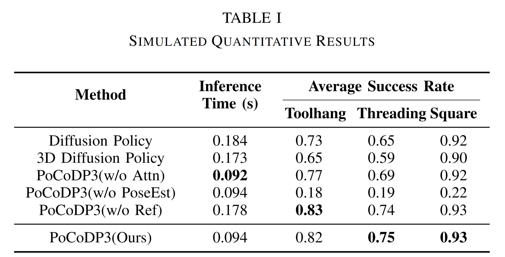

Simulation Evaluations

We evaluate our method on three simulation tasks: Toolhang and Square from Robomimic, and Threading D0 from MimicGen. FOTS is integrated into the environment to generate tactile images and marker motion data.
We select two state-of-the-art diffusion-based policies as baselines for comparison: (1) Diffusion Policy (DP), which generates actions conditioned on image observations; and (2) DP3, which replaces image inputs with point cloud observations while maintaining the same diffusion framework. In addition, we compare three ablated variants in simulation: (1) PoCoDP3 (w/o PoseEst): replaces the pose features with ResNet-encoded tactile image features as the output of the pose-aware branch; (2) PoCoDP3 (w/o Attn): directly concatenates the encoded pose features with the point cloud features, without using the contact-driven dynamic modality fusion mechanism; and (3) PoCoDP3 (w/o Ref): uses standard diffusion policy instead of reference-guided one. We evaluate all variants based on inference time and success rate.
